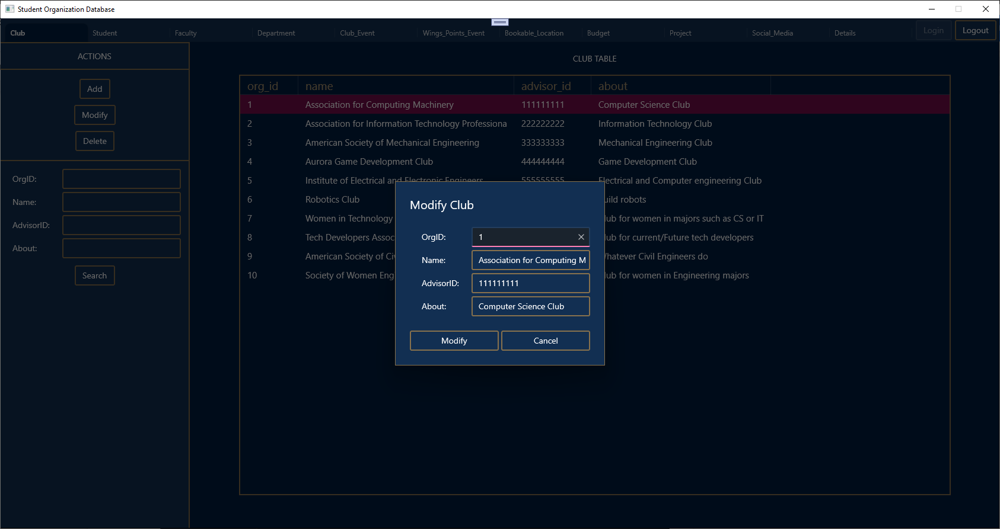

Database GUI
This program connects to a MySQL instance and displays data regarding student organizations. It also allows data to be created, modified, and deleted.

ToDo List App

This program allows the user to create a ToDo list item with a specified priority, which is then added to the ToDo list. A selected list item can be removed or completed using a button. List items that have been completed are displayed in a list under the Completed tab.